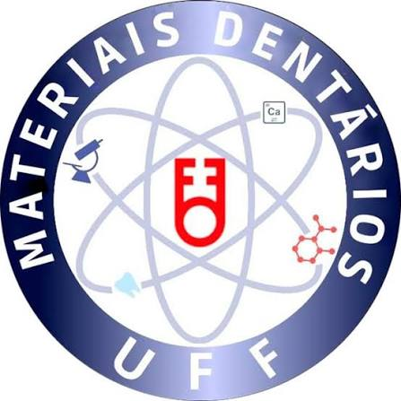
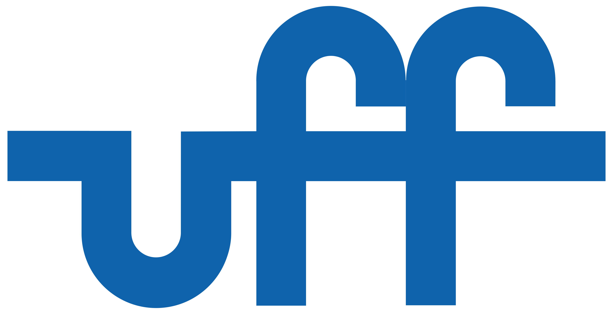
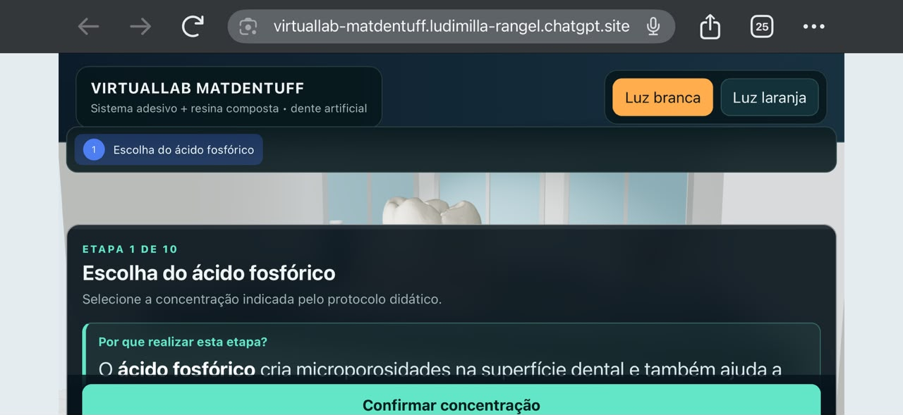

◎ Objetivo
Executar corretamente o protocolo adesivo e inserir a resina composta em cavidade Classe I de um dente artificial.


Projeto de monitoria dedicado ao treinamento pré-clínico de Materiais Dentários na Universidade Federal Fluminense.
↻ No celular, a prática funciona melhor com o aparelho na horizontal.
Selecione o módulo de treinamento que deseja realizar.
Executar corretamente o protocolo adesivo e inserir a resina composta em cavidade Classe I de um dente artificial.
Sequência, concentração do ácido, tempos, lavagem, secagem com papel absorvente e controle da iluminação.
10–15 minutos • até 3 tentativas
